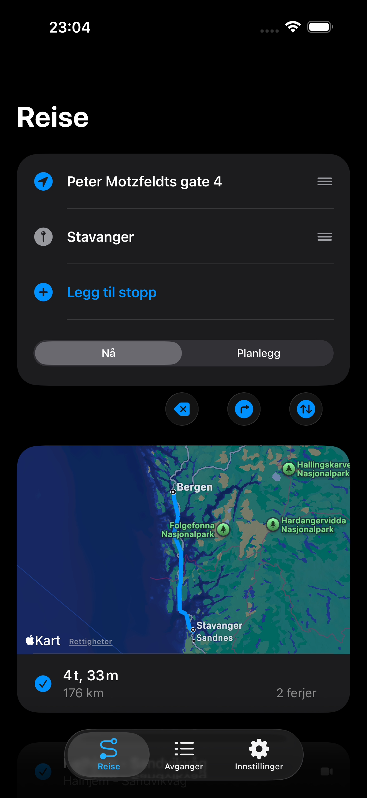
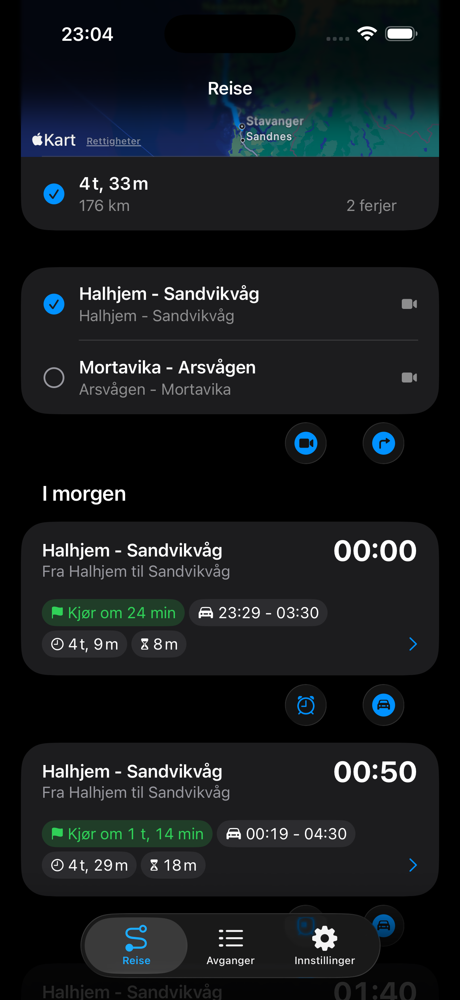
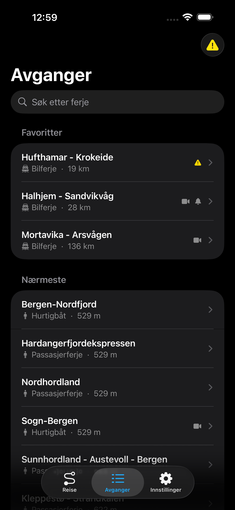

Alle fergetider i Norge,
rett i lomma
Ferjetid gir deg sanntids avgangstider, ruteplanlegging og trafikkvarsler for alle norske ferjesamband.
Ferjetid gir deg sanntids avgangstider, ruteplanlegging og trafikkvarsler for alle norske ferjesamband.



Alt du trenger for å planlegge ferjereisen, samlet i én app.
Bla gjennom alle norske ferjesamband med oppdaterte avgangstider. Få varsler om forsinkelser og kanselleringer.
Beregn når du må dra hjemmefra basert på posisjonen din. Få varsler når det er på tide å reise, med veibeskrivelse i Google Maps eller Apple Maps.
Se direktebilder fra trafikkamera ved ferjeleier over hele landet. Sjekk trafikk- og værforhold før du drar.
Hold deg oppdatert om driftsforstyrrelser, forsinkelser og situasjonsrapporter på ferjeruter.
Lagre favorittsamband og destinasjoner. Få skreddersydde pushvarsler for rutene du bruker mest.
Se ferjesamband i nærheten, få avstandsestimat og automatisk beregning av ankomsttid til ferjeleiet.
Last ned Ferjetid gratis og få full oversikt over fergetider i hele Norge.